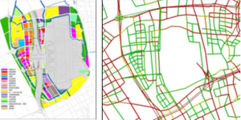

《虹桥综合枢纽地区控制性详细规划》初步方案交通评估 ( 2008年04月03日 )
《虹桥综合枢纽地区控制性详细规划》初步方案交通评估</STRONG>
研究时间：2007年8月20日—2007年9月20日

一、研究背景<BR> 为了对处于控详规划研究阶段的《虹桥综合枢纽地区规划方案综合》（以下简称“控详规划”）进行科学评价，及时发现规划方案中存在的各类问题，市综合交通所和市规划院作为工作小组，在前一阶段《虹桥综合交通枢纽设计及周边地区规划交通评估》的基础上，对控详规划开展交通评估工作，本专题重点对用地和道路方案进行评估。<BR>二、研究内容<BR>1、用地开发方案评估结论<BR> 西部开发区总开发规模在V3.0基础上有所降低，在轨道方案无实际优化效果情况下，总开发规模（不包括动迁基地和枢纽本体）应控制在300万平米以下。用地结构需要进一步调整。增加市政公用设施、绿化用地，降低居住和公共设施用地面积。<BR> F地块用地性质不合理，开发规模偏大。F地块无轨道交通服务支撑，同时毗邻A区主要干道，不适宜作为商业服务、办公等性质的用地开发，应调整用地性质、降低开发量。<BR> 用地调整方案和轨道优化方案在规划目的上存在相互矛盾。用地调整分散了人口和岗位的分布，而轨道优化方案希望增加轨道网的服务覆盖，正反作用使得轨道优化方案实际覆盖的人口和岗位并未明显增加，因此，在规划理念上，要避免用地规划和交通规划的脱节。<BR>2、道路系统评估结论<BR> 开发区内路网容量增加。控详规划方案的区内地面路网方案，道路容量在V3.0基础上增加30％，核心区道路网容量增加近60％，在一定程度上弥补了V3.0路网较稀的缺陷,但是需要交通组织手段，降低一般支路对干道系统通行能力的影响。<BR> 枢纽配套快速通道在承担过境交通和枢纽到发交通后，道路容量极其有限。配套快速通道不仅是枢纽本体的重要集疏运道路，也是联系长三角地区、上海西部地区和枢纽、中心城的重要通道，不仅承担了枢纽本体到发交通量，也要承担区域性联系交通。即使没有虹桥西部开发区的开发，枢纽过境交通和枢纽本身产生的交通量对“一纵三横”来说已经很难承受。西部开发必须在控制开发规模下，同时主要依靠轨道交通的支撑。<BR> 区域主要干道衔接快速路匝道和外部主干道路段，在密集高峰时段拥堵。重点优化A区向B区西向通道，支持A、B区联动开发，增加轨道交通的服务覆盖，提高区域与外部交通需求的轨道交通比重，减少道路交通的压力。<BR> 区内主要干道SN2、SN6、七莘路、天山西路和仙霞西路在密集高峰小时60％路段临近饱和或已经饱和。动迁基地，B地块与核心开发区的联系主要靠SN1、SN2和SH3，通道容量不足。F地块交通需求的增加造成其东向EW2路道路供给不足。<BR> 核心区内主要次支路服务水平良好，主干道服务水平有待保障。核心区向北、西、南方向的干路通道不足，在密集高峰小时接近饱和。<BR> 高架系统枢纽型立交和接口立交均在密集高峰小时处于饱和状态，特别是下匝道排队严重影响了高架系统的通行质量。<BR> 由于开发区对外通道容量有限，服务水平较低，因此高架与地面道路衔接的下匝道极易造成排队，90％的下匝道在密集高峰小时处于过饱和状态。<BR> 开发区内部的主要拥堵点发生在干道相交的交叉口，并且越外围的交叉口，拥堵情况越严重，说明地面道路服务能力十分有限，因此必须通过控制开发量和提高轨道交通的服务水准，缓解道路交通压力。<BR>3、轨道系统评估结论<BR> 1）控详规划优化方案评价结论<BR> 与V3.0轨道方案相比，虽然控详规划通过调整5号线的走向，线网密度增加了1/2，面积覆盖率增加了近1/3，但是由于用地和开发布局的调整，使得调整后线网实际覆盖的人口和岗位反而降低了9％。因此，控详规划的线网覆盖服务水平实际没有提高。由于轨道线网优化没有与用地规划紧密结合在一起，极易造成轨道运能的利用不足。<BR> 比较控详方案的优化方案和V3.0的5条线路的客流预测结果，5条线路客流总量降低2%，2号线和10号线的客流并没有得到分流，5号线客流仅增加了3％，控详方案中并没有很好解决轨道线网对地区开发支持不足的问题。<BR> 控详规划方案由于在虹桥西站西测增加了一个新的换乘中心，虹桥西站的换乘压力较V3.0减小8％，主要分担了10号线和青浦线的部分换乘，还分担了部分10号线、5号线和青浦线到西部开发区的部分换乘量。因此新换乘中心的增加十分必要。<BR> 2）轨道线网优化方向评价结论<BR> 应规划院的要求，我所对13号线与17号线进行比选，在优选方案基础上，对是否在虹桥西站西侧增设新换乘中心进行比选，得到以下主要结论。相比较而言，13号线比17号线对地区开发支持力度更强，同时可以分担2号线和10号线的客流压力，分解虹桥西站6％的换乘压力。新换乘中心的设置十分必要，可分解部分2号线与青浦线进城方案的部分换乘量，虹桥西站的换乘压力减少4％。建议对虹桥枢纽地区的线网进一步优化，引进新的轨道线路，增加西部开发区的轨道线网服务水平。<BR>4、主要意见<BR> 1）在轨道方案无实际优化效果情况下，总开发规模（不包括动迁基地和枢纽本体）应控制在300万平米以下。<BR> 2）建议调整F地块的用地性质，尽量避免商业服务、办公和居住等与交通需求密切相关的土地利用性质。开发量分布需要结合轨道交通站点进一步优化。在控制开发总量的前提下，对开发量的分布进行优化，将人口和岗位尽可能向轨道交通站点周边地区集聚，从用地上优先与轨道交通结合，充分发挥轨道运能，减少开发对地面道路交通的压力。<BR> 3）对核心区内部主干道SN2的形态进一步优化，尽可能的避免不规则交叉口。对西部开发区的整个路网的横断面形式选择方案进行优化，考虑多种交通组织手段实施的可能性，特别注意主要干道和主要对外通道实施公交专用道的要求。对服务街坊内部的一般支路与干道相交时采取右进右出的交通组织，降低对干道通行能力的影响。<BR> 4）现有轨道方案很难同时满足枢纽本体到发交通和西部开发的需要，对虹桥西站换乘压力的缓解作用有限，不建议控详规划轨道优化方案，必须对轨道线网进行新的优化论证。

地址：上海市静安区铜仁路331号11楼 邮编：200040 Web:site:www.scctpi.sh.cn
电话：（021）62477711 62890464 传真：（021）62472386 62892787
 沪ICP备11003425号-4
沪ICP备11003425号-4